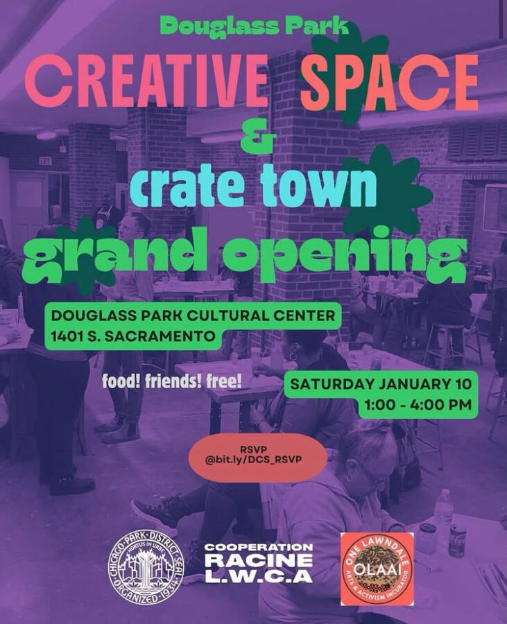

Creative Space Grand Opening at Douglass
In collaboration with Cooperation Racine, we invite you to a joyful, family-friendly celebration as we celebrate the grand opening of both The Douglass Creative Space, and its sister project, Crate Town. Join us for food and fun! Featuring hands-on explorations of a range of objects that can be created in our flexible Creative Space, provided by local artists and makers, and a live DJ and youth activations in Crate Town.
Participating Artists Include:
Switchgrass
Myra Su
Cain
Oriana Koren
Woven Together
Ben Blount